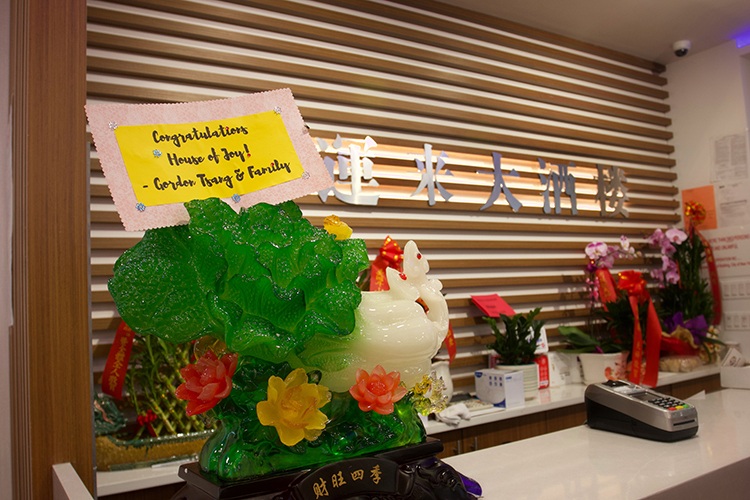

<!doctype html>
<html>
    <head>
        <meta charset="UTF-8">
        <meta name="viewport" content="width=device-width, initial-scale=1">
        <link rel="stylesheet" href="articlesheet.css">
        <link rel="icon" type="image/x-icon" href="img/rice.png">
        <title></title>
        <style>
            @import url('https://fonts.googleapis.com/css2?family=Assistant&family=Cardo:ital@1&family=Frank+Ruhl+Libre&family=Lora:ital,wght@1,600&display=swap');
        </style>
    </head>
</html>
<body>
    <div class='text-container'>
        <h1>The reopen of House of Joy makes it the largest banquet hall in Chinatown, though hard to replace the status of Jing Fong</h1>
        <p class="byline">Reporting & Photo: Chuqin Jiang</p>
        <p class="byline">Date: 9/16/2021</p>
        <div class="picture">
            
        </div>
        <p class="caption">The jade cabbage was a gift sent by the owner’s friend, symbolized prosperity and wealth in Chinese</p>
        <p>On the evening of September 10, the banquet hall of House of Joy was filled with 45 round tables. More than 400 guests were greeted by brand new red carpets, soaring chandeliered ceilings, LED screens, and signature cuisines. Lobster, beef tendon, trotters, cuttlefish and other Cantonese cuisine were served by dozens of uniformed waiters. People toasted with blessings, sharing this moment of happiness.</p>
        <p>This was the first night of the Chinatown banquet hall’s reopening. The new owner, Ben Huang, took over the banquet hall in January when the original operation couldn’t survive the pandemic. He changed the English name from Delight 28 to House of Joy but kept the Chinese name, Xiyunlai, which means may both joy and good luck come. After redecorating for 8 months, it reopened with a new menu, new employees and upgraded facilities.</p>
        <div class="picture">
            
        </div>
        <p class="caption">Representatives of 60 Chinese Consolidated Benevolent Association (CCBA) affiliated institutions were invited to the celebration on the first night of reopening</p>
        <p>The lively scene had disappeared in Chinatown for more than a year. After Jing Fong’s close on March 7th, there is no venue for Chinese community to hold parties and receptions. Though the reopen of House of Joy filled the vacancy, the scale is only half of Jing Fong, which can contain more than 800 customers. However, it still attracts diners who missed the taste of dim sum and the atmosphere of the banquet hall. The owner thinks more than bringing old customers back. He wants to develop new types of customer, considering people are still hesitate about holding large gatherings now.</p>
        <p>The catering industry, which accounts for 40% of Chinatown’s total revenue, had been hit hard by the dual pressure of the pandemic and xenophobia. In March 2020, the revenue of Chinatown restaurants dropped by 96% compared with the same period the prior year, while the figure for New York as a whole was 85%, according to an analysis of Mastercard credit card data.</p>
        <p>Many banquet halls have not been able to recover from the steep loss in business. AMAZING 66 and Golden Mandarin Court, two banquet halls located one block away from House of Joy, closed permanently. 88 Palace, the backbone of East Broadway Mall, serving as the community center of Fujian community, announced its closure last September.</p>
        <p>For Jimmy Chen, the banquet hall’s manager, this lively opening feast was just the beginning of his busy week. He is still training the waiters and cashiers to use the new electronic ordering and billing system. Before the pandemic, it only accepted cash.</p>
        <p>“It’s because they rely on the old customers. Most first-generation immigrant are not using the credit card. But I think the only way to keep the banquet hall alive is to attract more new customers, like young Chinese people and foreigners.” said Chen.</p>
        <div class="picture">
            
        </div>
        <p class="caption">Jimmy Chen is trying to get familiar with the new electronic ordering and billing system</p>
        <p>The foot traffic these days is better than he expected, reaching more than 100 tables a day. There were also two booked banquets in the first week: One was a company gathering dinner and another was a reception of a visiting guest. During lunchtime on a busy day, it may take half an hour to taste the first bite of Dim Sum. Most customers were Chinese families living nearby, knowing it was a time-honored banquet hall. Some of them heard the news from the Instagram, coming from other neighborhoods to support Chinatown restaurants.</p>
        <p>Matthew Bernardo, who is half Chinese, drove from New Jersey to Chinatown to have a hair-cut and pick up some shrimp dumplings and fish balls in House of Joy. “It is very sad to see the loss of so many restaurants,” he said. “I want to try my best to support, coming down and telling other people to come down as much as possible.”</p>
        <p> Compared with small restaurants, the rent and operation expenses of a banquet hall are higher, which makes it harder for it to transform. In June last year, Jing Fong, previously the largest banquet hall in Chinatown with seating for up to 900 diners, had to abandon indoor service after the lockdown and switch to take-out and patio seating.</p>
        <p>On March 7, Jing Fong announced its closure because it couldn’t afford the rent. The owner was planning to reopen it in a smaller place. But the new address can only accommodate about 100 people, and the number of staffs is only 1/10 of the original, according to Liang Chen, a former employee of Jing Fong.</p>      
    </div>
</body>